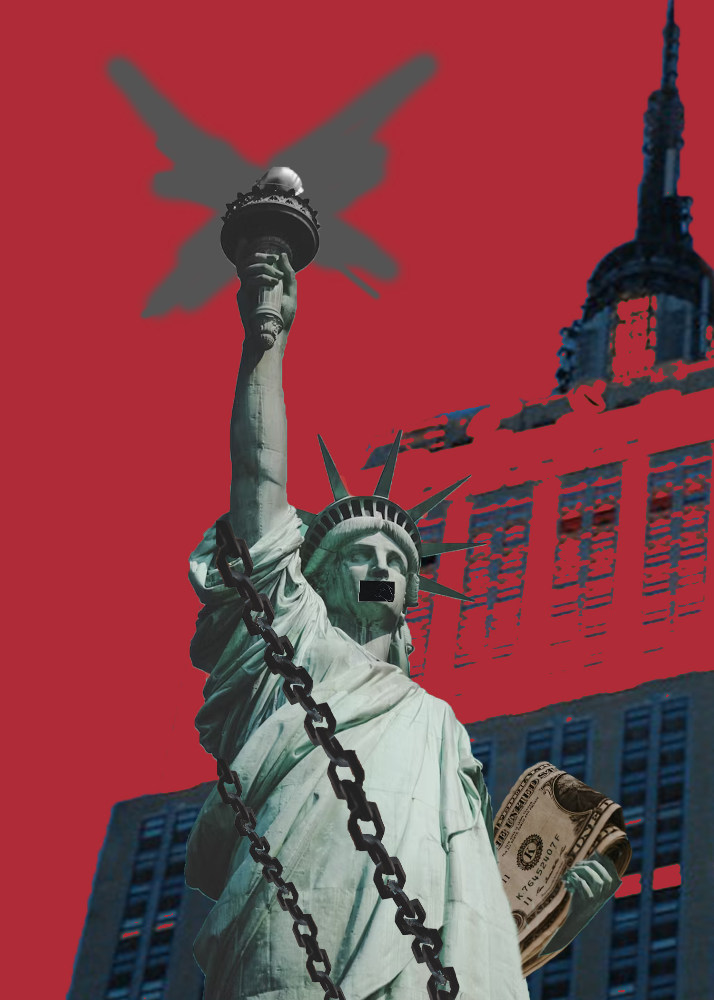

For this piece my original inspiration was also something to do with culture, originally I wanted to go for a NYC dance and black community analysis that would show the importance of the black community in NY's history. However, as I was working through it I was struggling to convey what I wanted too visually so I went back to brainstorming, but I still wanted to keep the same themes. I ended up thinking of immigrants and how important they are to our country but being treated so horribly so I naturally ended up back to my home NYC and how its being affected by our current politics. One of my friend's friend has gotten kicked out the country due to ICE which is so unreal to believe that these issues are so close to us. Although I believe NYC to be not the most affected by ICE yet, I think that the Statue of Liberty is a great symbol of liberty for all and the original American ideals. So, I wanted to represent the Statue of Liberty being imprisoned or in chains to show that it is not necessarily a willful move of the people to conduct unlawful acts but rather a force higher than them acting upon these innocent people, this is also why I included them holding the money instead of the book as the people in power are those with corrupt money. I used saturation, pass through, and darker color as my blending modes in order to create a gritty feel. Instead of the last piece where I wanted to contrast dark and light to represent multitudes of emotions and feelings here I wanted Lady Liberty to remain untouched but for its surroundings to have an edge that would contrast her. This is why I made the background red, since I also think that red backgrounds are commonly used in political pieces. :
